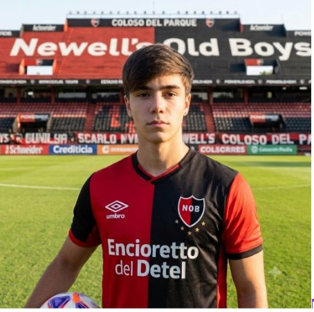

10Joaquín Just
Enganche
El cerebro del equipo: piensa la jugada dos pases antes que el resto. Estudiante de Sistemas, zurdo de pausa y último toque, se hizo en las inferiores mirando videos de partidos hasta cualquier hora. Usa la 10 y patea todos los tiros libres del borde del área.
- 28 PJ
- 11 Goles
- 14 Asist.